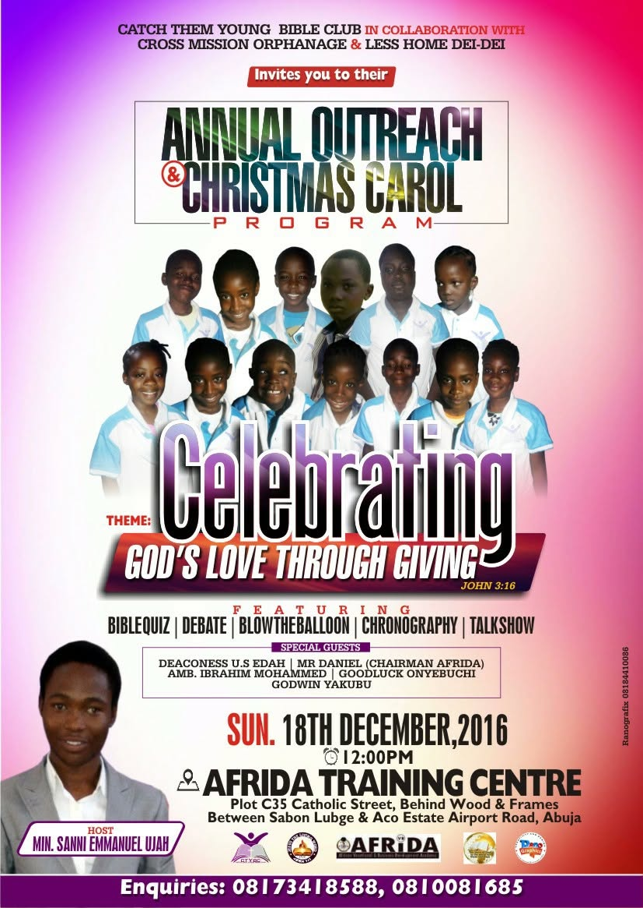

School outreaches, pad drives, children’s programmes and practical community support are part of CTYBC’s work. Browse the archive by year; new outreach photos can be added from the website editor.
01
14 DECEMBER 2025 · SCHOOL OUTREACH & PAD DRIVE
A day of care, learning and shared joy
During the first day of its December outreach, CTYBC shared 100 sanitary pads with teenagers and distributed school supplies including socks, pens, pencils and erasers. Children also received drinks, while spaghetti, macaroni and Indomie were shared. The team thanked parents and partners for helping make the day possible.
For International Day of the Boy Child, CTYBC visited LEA Primary School, Sabon Lugbe and The Golden Crest Royal Academy. Under the theme “Building Self-Esteem in Boys: Stand Up, Be Heard, Be Seen,” the team spoke about confidence, purpose and responsibility, and encouraged boys to believe in their abilities and future. Educational materials and refreshments were shared. The programme also called attention to boys’ emotional wellbeing, safety and the importance of listening to them.
CTYBC’s public archive records a visit to Gifted and Talented Orphanage Home. The original album preserves the day’s moments; browse the photos and account on the club’s Facebook page.
For International Day of the Boy Child, CTYBC shared a collection of reflections celebrating boys and the care, guidance and encouragement that help them grow. The message paired its greetings with thoughts on raising boys to be confident, respectful and kind, to stand up for others, and to value the people who guide them.
The accompanying photograph shows young people gathered together outdoors. This post is a celebration and message of encouragement, rather than a report of a separate school outreach.
11 OCTOBER 2022 · INTERNATIONAL DAY OF THE GIRL CHILD
Our time is now: rights, safety and brighter futures
Marking the 2022 International Day of the Girl Child, CTYBC highlighted barriers girls face in education, wellbeing and protection, including additional barriers for girls with disabilities. The post shared the year’s theme, “Our time is now—our rights, our future,” and called for stronger attention and investment in girls’ needs.
CTYBC’s message encouraged girls to pursue their ambitions and look to women role models. It also called on families to support daughters’ choices, protect them from early and forced marriage and abuse, build open communication, pay attention to changes in mood, and guide age-appropriate internet and media use. The post includes photographs of girls spending time together.
6 DECEMBER 2016 · ANNUAL OUTREACH & CHRISTMAS CAROL PROGRAMME
Celebrating God’s love through giving
CTYBC invited supporters to join its Annual Outreach and Christmas Carol Programme, held on Sunday, 18 December 2016 at 12 noon. The flyer names Afrida Training Centre, Plot C35 Catholic Street, behind Wood & Frames, between Sabon Lugbe and Airport Road, Abuja as the venue. The programme was presented as a day of giving and service, with Bible quiz, debate, balloon activities, choreography and a talk show.
The Facebook invitation asked people to join, pray for the team and support the programme. Its poster also credits Cross Mission Orphanage & Less Home Dei-Dei as a collaborator.

Annual Outreach & Christmas Carol Programme · 18 December 2016